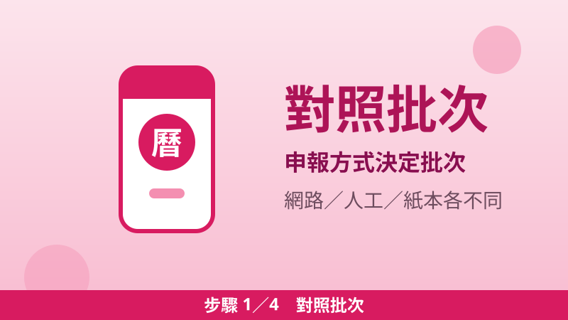
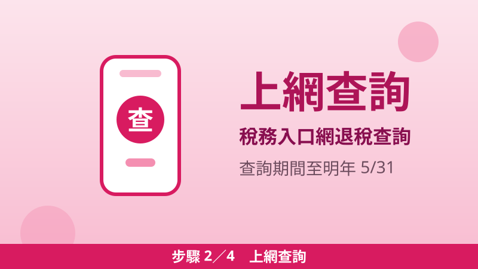
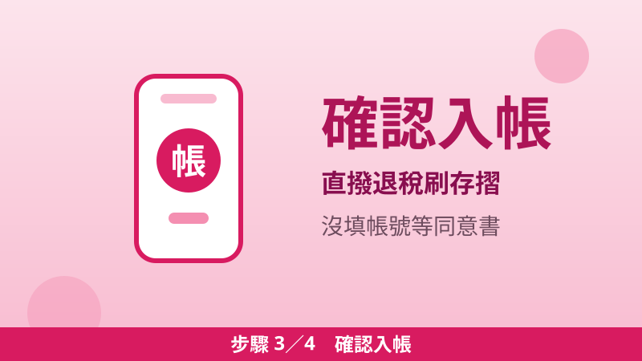
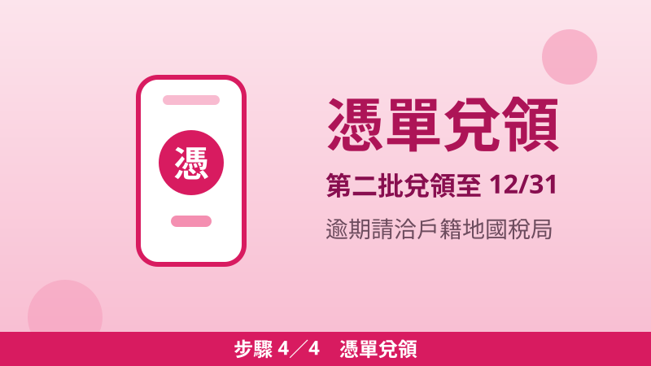

2026 綜所稅退稅教學：第二批 10/30 已入帳、第三批 2027/1/20，4 步驟查入帳＋憑單 12/31 前要兌領
今年 5 月報的 114 年度綜合所得稅，退稅分三批發放：第一批 7 月 31 日、第二批 10 月 30 日、第三批 2027 年 1 月 20 日。第二批已經入帳了——財政部統計，本批共 8 萬 2,795 件、退稅總額 14 億 3,671 萬餘元。刷存摺還沒看到錢，先別急著打電話：退稅領不領得到、什麼時候領，關鍵在你當初用什麼方式報稅。以下對照表加 4 個步驟，幫你一次查清楚。
8 萬 2,795 件・退稅總額 14 億 3,671 萬餘元
三批退稅對照表：先看自己是哪一批
財政部依申報方式、申報時間及核定情形分三批辦理退稅。對照你 5 月報稅的方式，就知道自己在哪一批：
| 批次 | 退稅日 | 適用對象 | 退稅憑單兌領期間 |
|---|---|---|---|
| 第一批 | 2026/7/31 | 5/1–6/1 期間以網路（含手機）申報；稅額試算線上登錄或電話語音回復；5/11 前向戶籍所在地國稅局紙本回復 | 2026/7/31–9/30 |
| 第二批 | 2026/10/30 | 6/1 前以二維條碼或人工申報；稅額試算紙本 5/12–6/1 回復；5/11 前向非戶籍所在地國稅局紙本回復 | 2026/10/30–12/31 |
| 第三批 | 2027/1/20 | 逾期申報；原申報為自繳或不繳不退，經核定改為退稅者 | 2027/1/20–3/19 |
第二批平均每件約 17,352 元（本站依財政部公布的件數與總額換算：14 億 3,671 萬餘元 ÷ 8 萬 2,795 件）。不過退稅不是政府額外發錢，是退還你平時多繳的稅款，實際金額依個人申報內容與國稅局核定結果而定，每個人領到的都不一樣。
四步驟：這樣查退稅有沒有入帳

步驟 1對照批次
先看上表：5 月用網路或手機報稅的，大多已在第一批 7/31 入帳；用二維條碼、人工申報或紙本回復稅額試算的，對照第二批；6 月 1 日之後才補報的，等第三批 2027/1/20。

步驟 2上網查撥付狀態
到財政部稅務入口網「綜合所得稅結算申報退稅撥付狀態查詢」，查詢期間為當年 7 月 28 日至次年 5 月 31 日。查不到退稅資料或有疑問，直接洽戶籍所在地國稅局分局或稽徵所。

步驟 3確認帳戶有沒有入帳
申報時有填退稅帳號、採直撥退稅的，第二批 7 萬 9,491 件（約 96%）已在 10/30 直接撥入指定帳戶，刷存摺就知道。當初沒填帳號的，國稅局已主動寄發「直接劃撥退稅同意書」，填妥帳戶、簽名或蓋章，在期限內郵寄、傳真或遞送回復，就能改採轉帳退稅。

步驟 4憑單要在期限內兌領
沒提供帳戶、也沒回覆同意書的，國稅局會寄發退稅憑單。第二批憑單兌領期間為 2026/10/30 至 12/31，收到憑單請儘速向指定金融機構兌領或提出交換，實際期限以憑單所載為準；遺失或逾期未兌領，請洽戶籍所在地國稅局詢問補發方式。
還沒收到？先對 4 個原因
- 不在這一梯次：網路、手機報稅的已在第一批入帳；逾期補報，或原申報自繳、不繳不退的，要等第三批 2027/1/20。
- 沒填退稅帳號：款項無法直接撥入帳戶，要等國稅局寄發的直接劃撥退稅同意書或退稅憑單。
- 帳戶無法入帳：直撥失敗時，國稅局會改寄退稅憑單，留意信箱有沒有收到。
- 核定結果不是退稅：第二批同時有 1,367 件補稅案件、補稅金額約 9,353 萬餘元；若核定為補稅，就不會有退稅入帳，改以核定通知書為準。
防詐提醒：退稅通知不會叫你操作 ATM
⚠️ 國稅局不會用電話及 ATM 轉帳退稅，也不會透過電話、簡訊或電子郵件要求你點擊不明連結、提供銀行帳戶或密碼、操作 ATM 辦理退稅。收到這類訊息就是詐騙，不要點、不要回；有疑問打國稅局免付費電話 0800-000-321，或撥 165 反詐騙專線查證。
常見問題
- 退稅金額為什麼跟別人差很多？退稅是退還多繳的稅款，依個人所得、扣繳與扣除額核定，每人不同；第二批平均約 17,352 元只是整體平均，不是每人固定領這個數。
- 我是第一批，但 7 月沒收到，怎麼辦？先上稅務入口網查撥付狀態；若顯示已寄憑單但已逾兌領期限（第一批憑單至 9/30），請洽戶籍所在地國稅局詢問後續處理。
- 明年報稅怎麼領最快？明年 5 月報稅時填寫退稅帳戶、選直撥退稅，核定後款項直接入帳，不用等憑單、不用跑銀行。
💡 稅金省下來，也別忘了其他省錢機會：地價稅自用住宅優惠見本站〈115 年地價稅 11 月開徵〉；房屋稅自住優惠見〈房屋稅自住 1.2% 怎麼保住〉；每月固定支出盤點見〈家庭省錢檢查清單〉；健保費怎麼算見〈2026 健保費怎麼算〉。
📎 資料來源
- 財政部稅務入口網「綜合所得稅結算申報退稅撥付狀態查詢」（查詢期間當年 7 月 28 日至次年 5 月 31 日、國稅及地方稅免付費電話 0800-000-321、國稅局不會用電話及 ATM 轉帳退稅）：etax.nat.gov.tw
- 中央社 2026/10/22「綜所稅第2批退稅10/30入帳 約8.2萬件逾14.3億元」（引述財政部規劃與財政資訊中心統計：三批退稅日 7/31、10/30、2027/1/20；第二批 8 萬 2,795 件、14 億 3,671 萬餘元；直撥 7 萬 9,491 件、一般退稅 3,304 件；補稅 1,367 件、9,353 萬餘元；直接劃撥退稅同意書）：cna.com.tw
- 財政部「114 年度綜合所得稅各批退稅日程表」附表（各批退稅日與退稅憑單兌領期間：第一批 7/31~9/30、第二批 10/30~12/31、第三批 116/1/20~116/3/19）：114 年度綜合所得稅各批退稅日程表（附表轉載）
最後查證日期：2026-11-09
免責聲明：本文僅供參考，退稅批次、金額與兌領期限以財政部及各區國稅局最新公告、個人核定結果為準，申請前請至官方網站或洽受理機關確認。